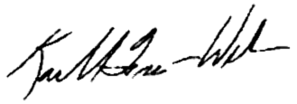

Welcome to garymaps.com and thank you for visiting. The information on this site provides valuable insight not only to city departments and our partners, but for all who have a vested interest in eliminating blight and rebuilding the great city of Gary! Over the past 18 months, nearly 200 people volunteered their time to help collect information on each property in Gary's 50+ square miles. I extend my heartfelt thanks to all of the students, residents, community leaders and city employees who cared enough to give their time to such an important project.
Now that we have this data, we can make smarter more calculated decisions on how to best address demolition and redevelopment. We will continue to work with our partners from the University of Chicago's Harris School of Public Policy, the Center for Community Progress and LocalData to build on our success.
Please plan to visit this site regularly as updates on our progress will be provided. We also invite you to volunteer on future surveys and offer your suggestions. As always, thank you for your support, and we are definitely headed in the right direction.
Sincerely,

Mayor Karen Freeman-Wilson